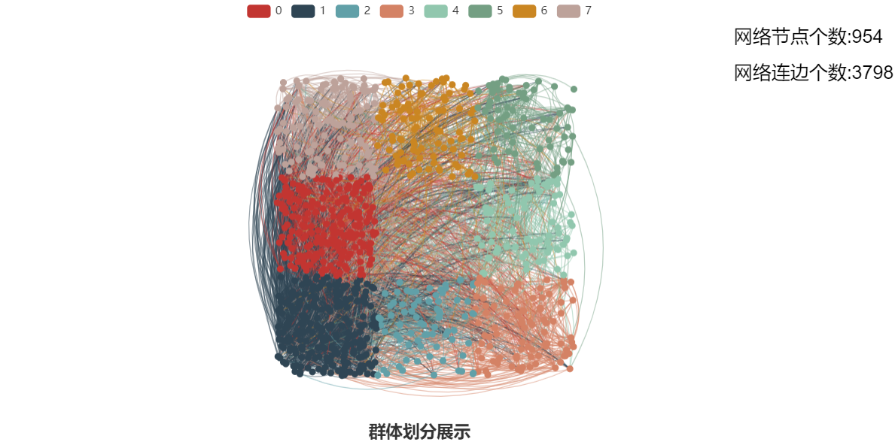
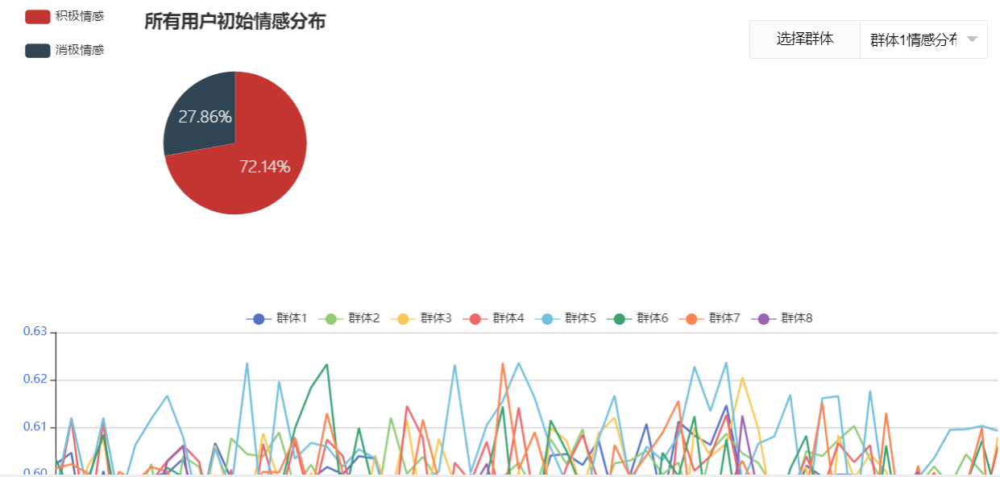
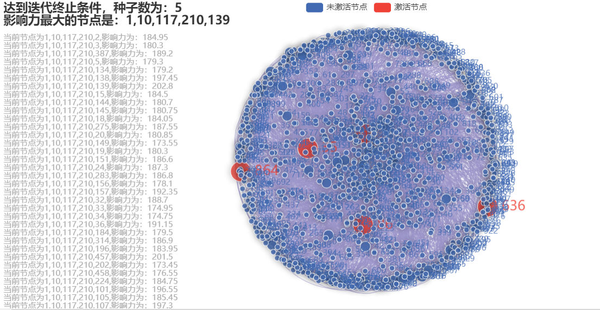

模型介绍
基于群体情感的影响力最大化方法主要分为三个模块：群体划分、基于群体情感的潜在用户集合发现、基于用户多维特征的信息传播。（1）群体划分过程主要采用Louvain算法进行划分，得到多个用户群体；（2）基于群体情感的潜在用户集合发现：根据社会心理学的“群体动力理论”，定义用户情感力和群聚信度概念，设计群体情感聚合机制。根据群体稳定性和用户非实时活跃性特点，一段时间内群体情绪发生剧烈变化表明该时间内影响力用户可能进行了信息传播过程。根据这一思想找出种子候选节点，提升算法效率；（3）基于用户多维特征的信息传播：该过程提出双因子信息传播模型，考虑用户内容情绪和网络结构信息，使得信息传播更加符合真实社交网络的复杂性。通过该传播模型发现候选节点中的种子传播节点。



